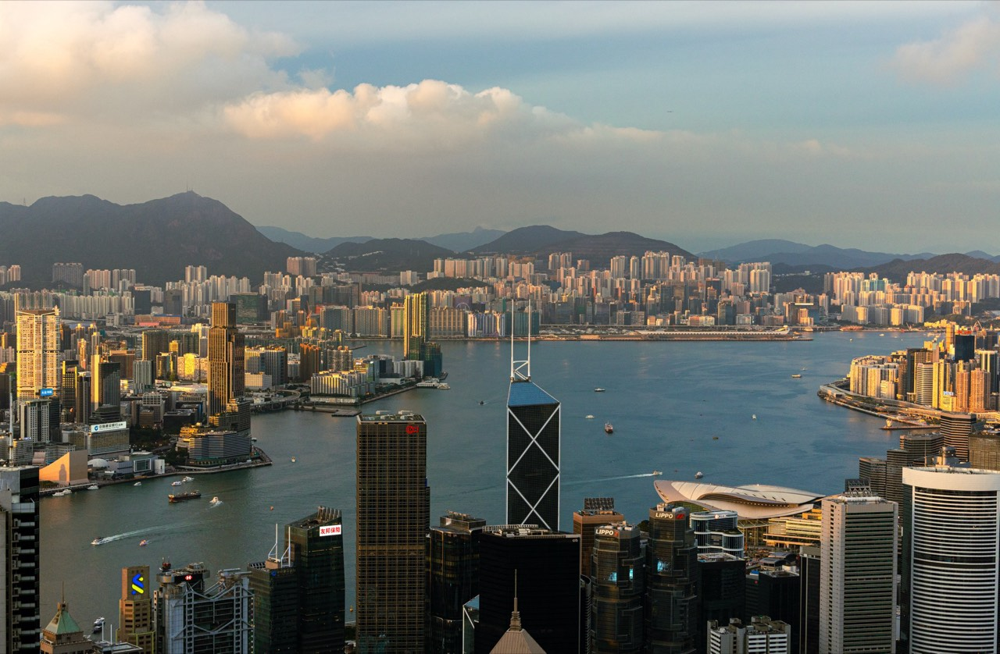
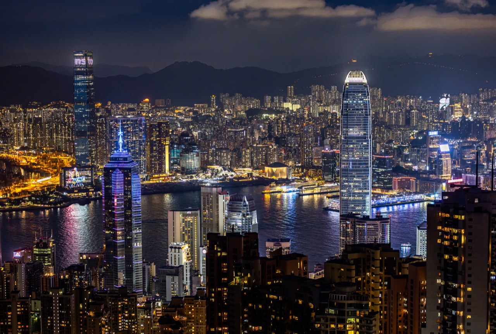
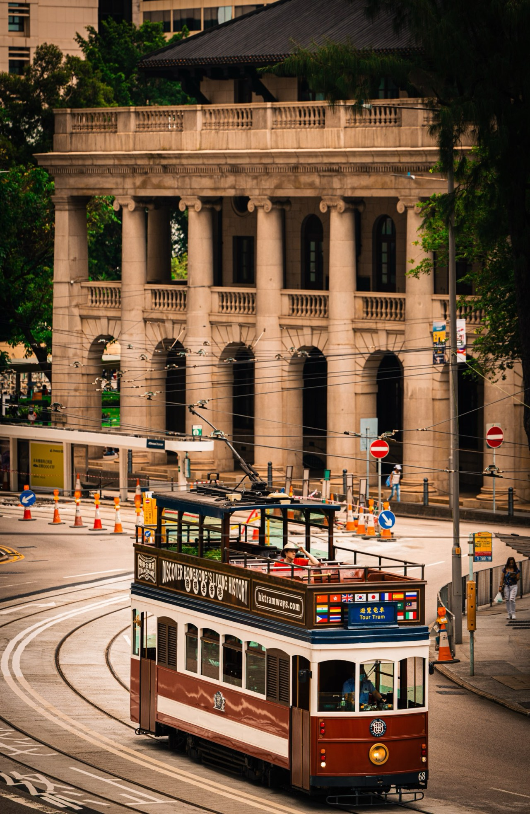

Hong Kong
Harbour nights and peak lookouts.
2025.5
Photographs





The guide for this country is not written yet.
Back to destinationsHarbour nights and peak lookouts.
2025.5



The guide for this country is not written yet.
Back to destinations